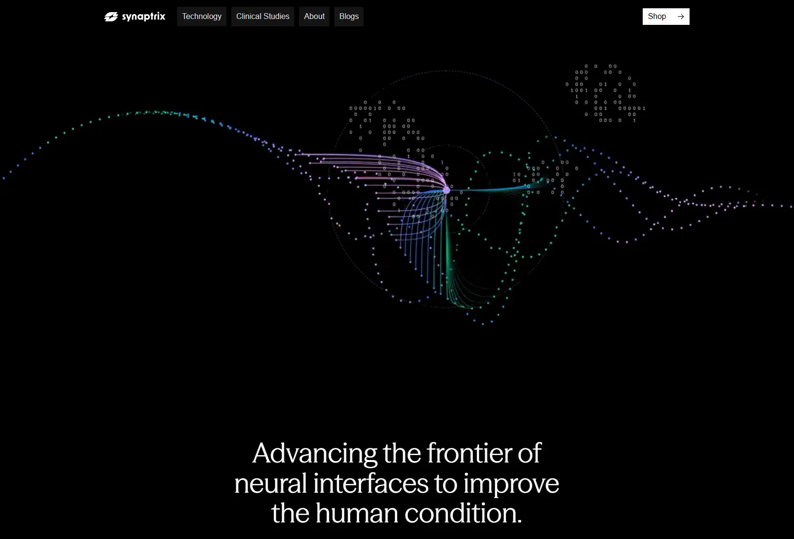

Synaptrix
- Корпоративный
- Сервисы и приложения
- ИИ-сервисы
- Обычным пользователям
- Инвесторам
- Минимализм
- Утилитарный техно
- Тёмная тема
- Нейтральный фон
- Видео-фон
- Тёмная тема по умолчанию
- Webflow
- Lenis
- Swiper
- Bunny CDN
- Английский язык
- США
- Действующий сайт

Что это
Сайт нью-йоркской лаборатории Synaptrix, которая делает неинвазивные нейроинтерфейсы: считывает сигналы мозга через ЭЭГ-ободок и переводит их в управление компьютером, коляской или протезом. Здесь рассказ о платформе, клинические исследования и набор участников. Сайт компании, которая разрабатывает нейроинтерфейсы для управления устройствами с помощью сигналов мозга без вживления имплантов.
Что смотреть в первую очередь
Смотреть главный экран с видео-анимацией и заголовком, затем раздел Technology с четырьмя продуктами платформы и страницу клинических исследований.
Приёмы
- Видео-фон
- Тёмная тема по умолчанию
Интересные факты
- Главный экран — чёрное поле, поверх которого крутится видео: светящиеся точки и нули-единицы сплетаются в подобие нейронной сети, а под ними крупным шрифтом набрана фраза о будущем нейроинтерфейсов.
- Вместо 3D-сцены, которая считалась бы в браузере, здесь восемь коротких фоновых видео в формате WebM: они запускаются сами, без звука и по кругу.
- Сайт собран в Webflow — визуальном конструкторе, который выдаёт готовую вёрстку; на это указывают адреса стилей и скриптов на cdn.prod.website-files.com и служебные классы вроде w-mod-js.
- Плавную прокрутку делает библиотека Lenis, подключённая напрямую с cdn.jsdelivr.net, а слайдеры собраны на Swiper 12.
- Продукт объясняют как платформу из четырёх частей: ЭЭГ-устройство Portal, модель очистки сигналов NeuroDiffusion, набор данных Cortex и исследовательский подход Generative Neuroscience.
- Клиническое исследование EMPOWER — про управление коляской силой мысли; рядом набор здоровых добровольцев для записи ЭЭГ, заявки принимают через формы Typeform.
- В футере указаны офис в Нью-Йорке и почта info@synaptrixlabs.com, а ссылки Privacy Policy и Terms of Use ведут на заглушку #.
Паспорт
- Домен
- synaptrix-labs.com
- Тип сайта
- Корпоративный
- Категории
- Сервисы и приложения
- Подкатегории
- ИИ-сервисы
- Для кого
- Обычным пользователям, Инвесторам
- Стиль
- Минимализм, Утилитарный техно
- Язык
- Английский
- Страна
- США, Нью-Йорк
- Автор
- Synaptrix Labs Inc.
- Год
- 2026
- Добавлен в коллекцию
- 08.11.2026
Палитра
-
#000000— 96% кадра -
#252934— 1% кадра -
#F8F8F8— 1% кадра -
#4C4B54— 1% кадра -
#6E6975— 0% кадра
- Режим
- Тёмная
- Цвет фона
- Нейтральный
Технологии
- Webflow
- Lenis
- Swiper
- Bunny CDN